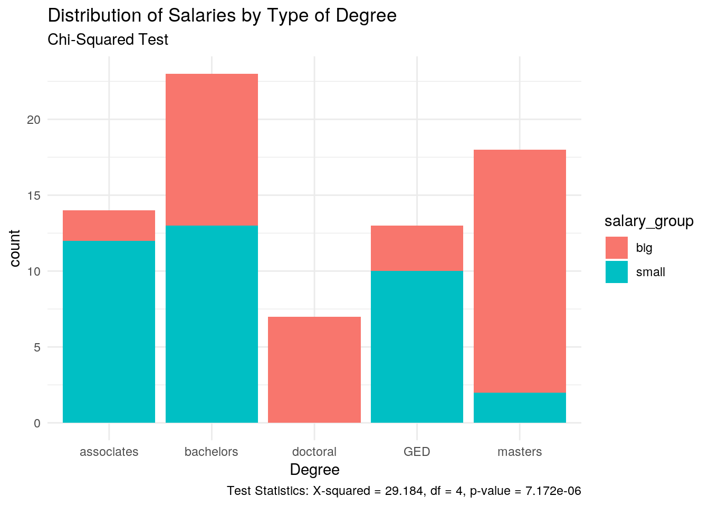
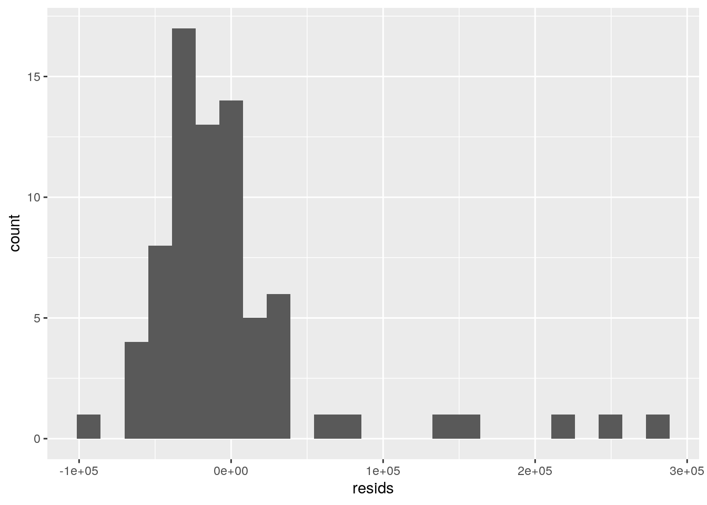
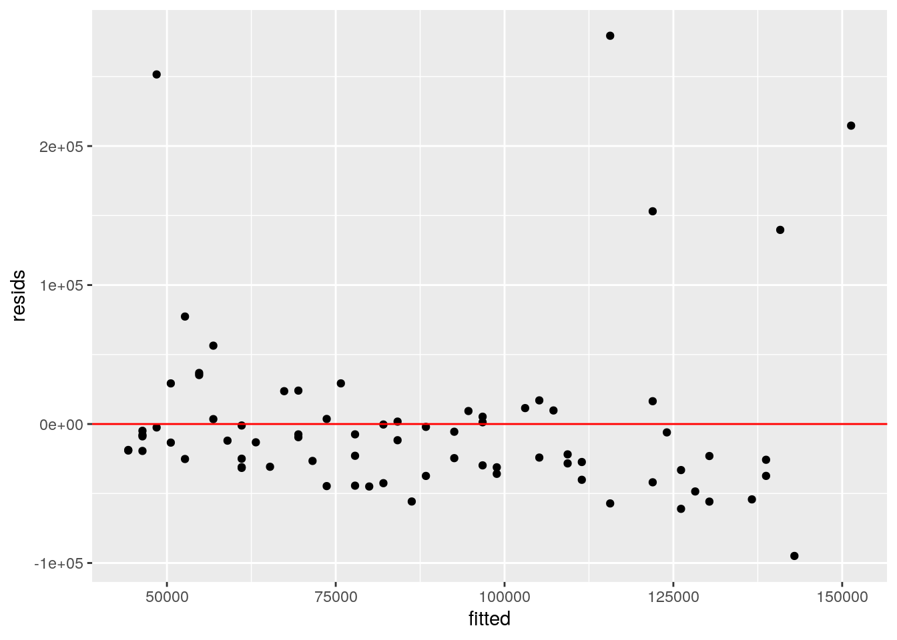
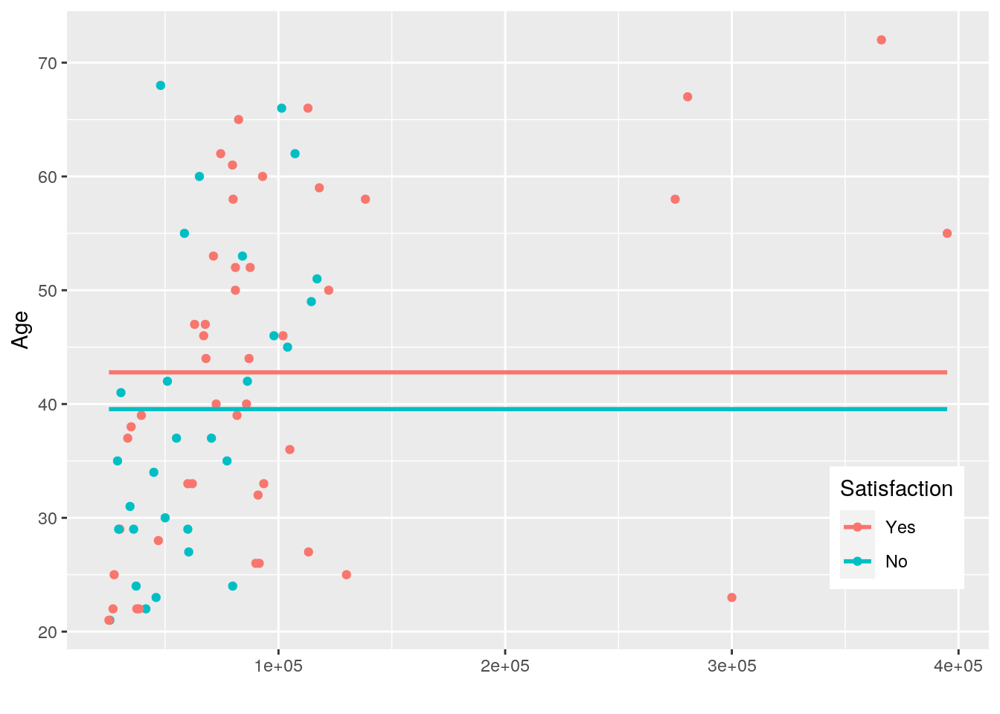

This dataset of 75 observations contains information to study any potential correlations or predictors of relationships between salary, educational background degree type, etc. There are many factors that influence salaries and degrees obtained such as experience, opportunity, family operations, business owner status, future goals, etc., but comparisons between this smaller set of variables may provide some type of trend and clarity on the relationships. The variables are as follows:
Salary: A numeric variable of individual salaries
Degree: A categorical variable describing the highest level of education (GED/high school diploma, associates degree, bachelor's degree, masters, and doctoral)
Age: Both men and women between the ages of 21 and 75
GPA: Highest educational GPA between 2.0 and 4.0; used to predict future success (success defined by salary, income satisfaction, etc.)
Satisfaction: A yes or no questions regarding if the individual is happy with their current success (income)
library(tidyverse)
library(dplyr)
library(ggplot2)
library(readxl)
library(readr)
testing <- read_csv("project2data.csv", col_types = cols(Age = col_number(),
GPA = col_number(), Salary = col_number()))# MANOVA test
man1 <- manova(cbind(Age, GPA, Salary) ~ Degree, data = testing)
summary(man1)## Df Pillai approx F num Df den Df Pr(>F)
## Degree 4 0.64208 4.7654 12 210 6.869e-07 ***
## Residuals 70
## ---
## Signif. codes: 0 '***' 0.001 '**' 0.01 '*' 0.05 '.' 0.1 ' ' 1# ANOVA
summary.aov(man1)## Response Age :
## Df Sum Sq Mean Sq F value Pr(>F)
## Degree 4 2623.1 655.78 3.6872 0.008799 **
## Residuals 70 12449.6 177.85
## ---
## Signif. codes: 0 '***' 0.001 '**' 0.01 '*' 0.05 '.' 0.1 ' ' 1
##
## Response GPA :
## Df Sum Sq Mean Sq F value Pr(>F)
## Degree 4 0.3852 0.096304 0.6489 0.6295
## Residuals 70 10.3886 0.148409
##
## Response Salary :
## Df Sum Sq Mean Sq F value Pr(>F)
## Degree 4 2.0678e+11 5.1695e+10 22.179 7.408e-12 ***
## Residuals 70 1.6315e+11 2.3308e+09
## ---
## Signif. codes: 0 '***' 0.001 '**' 0.01 '*' 0.05 '.' 0.1 ' ' 1testing %>% group_by(Degree) %>% summarize(mean(Age),
mean(GPA), mean(Salary))## # A tibble: 5 x 4
## Degree `mean(Age)` `mean(GPA)` `mean(Salary)`
## <chr> <dbl> <dbl> <dbl>
## 1 associates 36.3 3.24 48678.
## 2 bachelors 40.8 3.12 78929.
## 3 doctoral 54.3 3.18 241264.
## 4 GED 34.6 3.23 50792.
## 5 masters 46.6 3.31 94842.pairwise.t.test(testing$Age, testing$Degree, p.adj = "none")##
## Pairwise comparisons using t tests with pooled SD
##
## data: testing$Age and testing$Degree
##
## associates bachelors doctoral GED
## bachelors 0.3233 - - -
## doctoral 0.0048 0.0218 - -
## GED 0.7460 0.1869 0.0024 -
## masters 0.0332 0.1693 0.2006 0.0159
##
## P value adjustment method: nonepairwise.t.test(testing$Salary, testing$Degree, p.adj = "none")##
## Pairwise comparisons using t tests with pooled SD
##
## data: testing$Salary and testing$Degree
##
## associates bachelors doctoral GED
## bachelors 0.0688 - - -
## doctoral 1.3e-12 4.5e-11 - -
## GED 0.9098 0.0975 3.1e-12 -
## masters 0.0091 0.2985 2.8e-09 0.0145
##
## P value adjustment method: none# MANOVA assumptions
library(rstatix)
group <- testing$Degree
DVs <- testing %>% select(Salary, Age, GPA)
# Test multivariate normality for each group (null:
# assumption met)
sapply(split(DVs, group), mshapiro_test)## associates bachelors doctoral GED masters
## statistic 0.8124374 0.531471 0.7826124 0.9105228 0.9578948
## p.value 0.007141527 1.736977e-07 0.02745144 0.1864304 0.5615519A one-way MANOVA was conducted to determine the effect of the Degree obtained on three dependent variables (age, salary, and GPA). Significant differences were found among the five degree types for at least one of the dependent variables, leading to the use of ANOVA tests. (Pillai trace = 0.64208, pseudo F(12, 210) = 4.77 p < 0.0001)
Three univariate ANOVAs were conducted. Before any corrections were made, only salary and age appear to be significant, but not GPA. After bonferroni corrections, (alpha = .05/5 = .01), the same outcomes are still true. For age: F(4,70) = 3.68 p<0.01 and for salary: F(4,70) = 22.179 p<0.001
The probability of a type 1 error is: 1-.95^5 = 0.226.
Post hoc analysis was performed conducting pairwise comparisons to determine which type of degree differed by factors of age and salary. After making adjustments with bonferroni (alpha = 0.05/24 = 0.002), it is clear that there are not many significant values in age or salary. This may mean that the variables do not differ greatly.
MANOVA assumptions are not likely to have been met because some values are less than 0.05 which means an assumption was violated.
# chi-squared, randomization test
testing$salary_group <- ifelse(testing$Salary < median(testing$Salary),
"small", "big")
table(testing$Degree, testing$Salary)##
## 25200 25600 27000 27500 29000 29500 30000 30500 33500 34500 35000
## associates 0 0 0 1 1 1 0 0 0 0 1
##
## 36100 37200 37500 38500 39500 41500 45000 46000 47000 48000 50000
## associates 1 0 1 0 0 0 1 1 0 1 1
##
## 51000 55000 58500 60000 60400 62000 63000 65100 67000 67700 68000
## associates 1 0 0 0 0 0 1 0 0 0 0
##
## 70420 71300 72500 74500 77300 79700 79800 80000 81000 81700 82400
## associates 0 0 0 0 0 0 0 0 0 0 0
##
## 84100 85895 86300 87000 87500 90000 91000 91500 93000 93500 98000
## associates 0 1 0 0 0 0 0 0 0 0 1
##
## 101400 102000 104000 105000 107300 113000 113250 114500 117000
## associates 0 0 0 0 0 0 0 0 0
##
## 118000 122150 130000 138350 275000 280500 3e+05 366000 395000
## associates 0 0 0 0 0 0 0 0 0
## [ reached getOption("max.print") -- omitted 4 rows ]# visualization of contingency table
library(ggplot2)
ggplot(testing) + aes(x = Degree, fill = salary_group) +
geom_bar() + scale_fill_hue() + theme_minimal() +
labs(title = "Distribution of Salaries by Type of Degree",
subtitle = "Chi-Squared Test", caption = "Test Statistics: X-squared = 29.184, df = 4, p-value = 7.172e-06")
# chi-squared test
chisq <- chisq.test(testing$Degree, testing$Salary)
chisq##
## Pearson's Chi-squared test
##
## data: testing$Degree and testing$Salary
## X-squared = 291.77, df = 288, p-value = 0.4269The p-value (7.172e-06) is less than the significance level of 0.05 so we can reject the null hypothesis and conclude that there is an association. This is interesting because previously, in the MANOVA/ANOVA section, we didn’t see much significance with adjustments made, but when grouping salaries into “big or “small” based on median salary ($74,500), there is a more noticeable association between degree type and salary. This could be because salaries are skewed since there is such a great range. The data shows that more people receive a “big” salary with a masters or doctoral degree. And most people receive a “small” salary with an associates and GED. A bachelor’s degree receives almost equal salary groups while a doctoral degree does not have any “small” salaries.
# mean-centered variables for linear regression
data.frame(Salary_c = testing$Salary - mean(testing$Salary))## Salary_c
## 1 -4975.5333
## 2 50974.4667
## 3 -16955.5333
## 4 -3275.5333
## 5 -7675.5333
## 6 -26975.5333
## 7 -6375.5333
## 8 -51275.5333
## 9 -24375.5333
## 10 4124.4667
## 11 -375.5333
## 12 -5675.5333
## 13 -10075.5333
## 14 29624.4667
## 15 42624.4667
## 16 27124.4667
## 17 -20375.5333
## 18 25624.4667
## 19 -58375.5333
## 20 -16075.5333
## 21 -57375.5333
## 22 14624.4667
## 23 19924.4667
## 24 -53875.5333
## 25 -7375.5333
## 26 34774.4667
## 27 -52875.5333
## 28 14024.4667
## 29 10624.4667
## 30 5624.4667
## 31 30624.4667
## 32 2624.4667
## 33 16624.4667
## 34 3624.4667
## 35 278624.4667
## 36 25874.4667
## 37 -19375.5333
## 38 -6375.5333
## 39 -32375.5333
## 40 17624.4667
## 41 -39375.5333
## 42 -36375.5333
## 43 193124.4667
## 44 6124.4667
## 45 -61775.5333
## 46 -28875.5333
## 47 -22275.5333
## 48 124.4667
## 49 -7575.5333
## 50 212624.4667
## 51 -1480.5333
## 52 -41375.5333
## 53 -42375.5333
## 54 -25375.5333
## 55 -56875.5333
## 56 -60375.5333
## 57 -1075.5333
## 58 -52375.5333
## 59 307624.4667
## 60 -62175.5333
## 61 -27375.5333
## 62 -50175.5333
## 63 -27375.5333
## 64 -14875.5333
## 65 -57875.5333
## 66 187624.4667
## 67 -47875.5333
## 68 -45875.5333
## 69 -12875.5333
## 70 -40375.5333
## 71 -59875.5333
## 72 -37375.5333
## 73 -48875.5333
## 74 -19675.5333
## 75 -49875.5333testing$Salary_c <- testing$Salary - mean(testing$Salary)
# dummy variables
testing$Satisfaction <- factor(testing$Satisfaction,
labels = c("No", "Yes"))
testing$Satisfaction <- factor(testing$Satisfaction,
levels = c("Yes", "No"))
# regression test on Satisfaction to see if dummy
# variables are working
fit <- lm(Salary ~ Satisfaction, data = testing)
summary(fit)##
## Call:
## lm(formula = Salary ~ Satisfaction, data = testing)
##
## Residuals:
## Min 1Q Median 3Q Max
## -77194 -33552 -15394 12302 292606
##
## Coefficients:
## Estimate Std. Error t value Pr(>|t|)
## (Intercept) 102394 10108 10.130 1.47e-15 ***
## SatisfactionNo -38842 16256 -2.389 0.0195 *
## ---
## Signif. codes: 0 '***' 0.001 '**' 0.01 '*' 0.05 '.' 0.1 ' ' 1
##
## Residual standard error: 68560 on 73 degrees of freedom
## Multiple R-squared: 0.07254, Adjusted R-squared: 0.05983
## F-statistic: 5.71 on 1 and 73 DF, p-value: 0.01946# assumptions (linearity, homoskedacity)
# could be more variance present
resids <- lm(Salary ~ Age, data = testing)$residuals
fitted <- lm(Salary ~ Age, data = testing)$fitted.values
ggplot() + geom_histogram(aes(resids), bins = 25)
ggplot() + geom_point(aes(fitted, resids)) + geom_hline(yintercept = 0,
color = "red") The data is mostly normally distributed, except the few outliers. It looks worse because it is not enlarged. Data should be fore fanned out.
# assumptions(normality)
shapiro.test(resids)##
## Shapiro-Wilk normality test
##
## data: resids
## W = 0.69141, p-value = 2.875e-11# looks ok
# multiple linear regression model
fit2 <- lm(Salary ~ Age + Satisfaction, data = testing)
summary(fit2)##
## Call:
## lm(formula = Salary ~ Age + Satisfaction, data = testing)
##
## Residuals:
## Min 1Q Median 3Q Max
## -71741 -35781 -13211 15571 268475
##
## Coefficients:
## Estimate Std. Error t value Pr(>|t|)
## (Intercept) 17893.5 23932.6 0.748 0.457101
## Age 1975.1 515.7 3.830 0.000271 ***
## SatisfactionNo -32460.6 15011.3 -2.162 0.033909 *
## ---
## Signif. codes: 0 '***' 0.001 '**' 0.01 '*' 0.05 '.' 0.1 ' ' 1
##
## Residual standard error: 62920 on 72 degrees of freedom
## Multiple R-squared: 0.2295, Adjusted R-squared: 0.2081
## F-statistic: 10.72 on 2 and 72 DF, p-value: 8.379e-05library(ggplot2)
ggplot(testing, aes(x = Salary, y = Age, group = Satisfaction)) +
geom_point(aes(color = Satisfaction)) + geom_smooth(method = "lm",
formula = y ~ 1, se = F, fullrange = T, aes(color = Satisfaction)) +
theme(legend.position = c(0.9, 0.19)) + xlab("") 23% of variability in Salary is explained. Both p-values are less than their significant codes. Controlling for Satisfaction status, there is a significant effect of age on income, t=3.83, df = 72, p<.001. After controlling for age, there is no difference in satisfaction between those who said yes and those who said no.
library(sandwich)
library(lmtest)
# robust standard errors
robust <- lm(Salary ~ Age + Satisfaction, data = testing)
summary(robust)##
## Call:
## lm(formula = Salary ~ Age + Satisfaction, data = testing)
##
## Residuals:
## Min 1Q Median 3Q Max
## -71741 -35781 -13211 15571 268475
##
## Coefficients:
## Estimate Std. Error t value Pr(>|t|)
## (Intercept) 17893.5 23932.6 0.748 0.457101
## Age 1975.1 515.7 3.830 0.000271 ***
## SatisfactionNo -32460.6 15011.3 -2.162 0.033909 *
## ---
## Signif. codes: 0 '***' 0.001 '**' 0.01 '*' 0.05 '.' 0.1 ' ' 1
##
## Residual standard error: 62920 on 72 degrees of freedom
## Multiple R-squared: 0.2295, Adjusted R-squared: 0.2081
## F-statistic: 10.72 on 2 and 72 DF, p-value: 8.379e-05bptest(robust) #H0: homoskedastic##
## studentized Breusch-Pagan test
##
## data: robust
## BP = 5.634, df = 2, p-value = 0.05978# uncorrected/before robust SEs
summary(robust)$coef[, 1:2]## Estimate Std. Error
## (Intercept) 17893.462 23932.6481
## Age 1975.125 515.6675
## SatisfactionNo -32460.642 15011.2716# corrected/robust SEs
coeftest(robust, vcov = vcovHC(robust))[, 1:2]## Estimate Std. Error
## (Intercept) 17893.462 28810.449
## Age 1975.125 722.211
## SatisfactionNo -32460.642 12331.362The bptest is showing a p-value almost equivalent to 0.05. But for this case, we can reject the null that the variance of the residuals is constant, thus heteroskedacity is present. With robust standard errors, the standard error increased in age and decreased in satisfaction:no
library(dplyr)
library(sandwich)
# uncorrected/before robust SEs
summary(fit2)$coef[, 1:2]## Estimate Std. Error
## (Intercept) 17893.462 23932.6481
## Age 1975.125 515.6675
## SatisfactionNo -32460.642 15011.2716# corrected/robust SEs
coeftest(fit2, vcov = vcovHC(fit2))[, 1:2]## Estimate Std. Error
## (Intercept) 17893.462 28810.449
## Age 1975.125 722.211
## SatisfactionNo -32460.642 12331.362# bootstrapping
library(dplyr)
boot_dat <- sample_frac(testing, replace = T)
samp_distn <- replicate(5000, {
boot_dat <- sample_frac(testing, replace = T)
boots <- lm(Salary ~ Age + Satisfaction, data = boot_dat)
coef(boots)
})
samp_distn %>% t %>% as.data.frame %>% summarize_all(sd)## (Intercept) Age SatisfactionNo
## 1 27458.89 689.149 11775.22library(tidyverse)
library(lmtest)
# create a binary categorical variable
data <- testing %>% mutate(y = ifelse(Satisfaction ==
"yes", 1, 0))
# logistic regression model
logistic <- glm(y ~ Age + Degree, family = "binomial",
data = data)
coeftest(logistic)##
## z test of coefficients:
##
## Estimate Std. Error z value Pr(>|z|)
## (Intercept) -2.6566e+01 1.4991e+05 -2e-04 0.9999
## Age -1.1786e-15 3.1917e+03 0e+00 1.0000
## Degreebachelors 2.1293e-14 1.2157e+05 0e+00 1.0000
## Degreedoctoral 2.1560e-14 1.7458e+05 0e+00 1.0000
## DegreeGED -4.8460e-14 1.3727e+05 0e+00 1.0000
## Degreemasters 1.7379e-14 1.3111e+05 0e+00 1.0000confusion matrix ran yesterday but not today, luckily savedmy calculations though.
accuracy (38+10)/75 sensitivity 38/46 = 0.826
specificity 10/29 = 0.345
precision 38/57 = 0.67
Robust data shows the greatest standard error. There is likely less variation and more accuracy in the bootstrapped data.
For Salary = 0, log odds is -2.6e+01, odds of income disatisfaction is e^-2.6e+01 = 0.0023. For Salary = 1, log odds is (-2.6e+01)-(6.2668e-20)=-3.1, Odds is e^-3.1= 0.045. Every one unit increase in Salary multiplies odds by e^-6.2668e-20 = 8.2e-17. Odds of Satisatisfaction decreases 310% for every additional Salary.
For Age = 0, log odds is -2.6e+01, odds of income disatisfaction is e^-2.6e+01 = 0.002. For Age = 1, log odds is (-2.6e+01)+(7.9237e-16)=-0.52, Odds is e^-0.52 = 0.594. Every one unit increase in Age multiplies odds by e^7.9237e-16 = 254.
# create a binary categorical variable
data <- testing %>% mutate(y = ifelse(Satisfaction ==
"yes", 1, 0))
# logistic regression model for all variables
logistic2 <- glm(y ~ Age + Degree + Salary + GPA, family = "binomial",
data = data)
coeftest(logistic2)##
## z test of coefficients:
##
## Estimate Std. Error z value Pr(>|z|)
## (Intercept) -2.6566e+01 3.8989e+05 -1e-04 0.9999
## Age -8.0157e-16 3.2926e+03 0e+00 1.0000
## Degreebachelors 3.1738e-15 1.2436e+05 0e+00 1.0000
## Degreedoctoral 2.3209e-14 2.3744e+05 0e+00 1.0000
## DegreeGED -3.2631e-14 1.3731e+05 0e+00 1.0000
## Degreemasters 1.6008e-14 1.3583e+05 0e+00 1.0000
## Salary -8.8180e-21 9.1354e-01 0e+00 1.0000
## GPA -2.1651e-14 1.1108e+05 0e+00 1.0000exp(coef(logistic2))## (Intercept) Age Degreebachelors Degreedoctoral DegreeGED
## 2.900701e-12 1.000000e+00 1.000000e+00 1.000000e+00 1.000000e+00
## Degreemasters Salary GPA
## 1.000000e+00 1.000000e+00 1.000000e+00Controlling for Salary, GPA, and Age, all degrees have significantly higher odds of satisfaction, except for GED. Controlling for Salary, GPA, and Degree; a significant negative impact on odds of satisfaction is indicated for age. Controlling for Age, Salary, Degree; a significant negative impact on odds of Satisfaction is indicated for GPA. Controlling for Age, GPA, Degree; a significant negative impact on odds of Satisfaction is indicated for Salary.
library(Matrix)
library(glmnet)
y <- as.matrix(testing$Satisfaction) #grab response
x <- model.matrix(Satisfaction ~ ., data = testing)[,
-1] #grab predictors
x <- scale(x)
cv <- cv.glmnet(x, y, family = "binomial") #picks an optimal value for lambda through 10-fo
cv <- cv.glmnet(x, y, family = "binomial")
lasso <- glmnet(x, y, family = "binomial", lambda = cv$lambda.1se)
coef(lasso)## 10 x 1 sparse Matrix of class "dgCMatrix"
## s0
## (Intercept) 4.613456e-01
## Salary 2.356469e-16
## Degreebachelors .
## Degreedoctoral .
## DegreeGED .
## Degreemasters .
## Age .
## GPA .
## salary_groupsmall .
## Salary_c .Salary is retained
probs <- predict(logistic2, type = "response")
table(predict = as.numeric(probs > 0.5), truth = data$y) %>%
addmargins #notrunning correctly## truth
## predict 0 Sum
## 0 75 75
## Sum 75 75A lot of my data would not knit and I was unable to solve the errors. Overall, this was turned out to be a crappy dataset from the outcomes and interpretations produced.
## R version 3.6.1 (2019-07-05)
## Platform: x86_64-pc-linux-gnu (64-bit)
## Running under: Ubuntu 18.04.5 LTS
##
## Matrix products: default
## BLAS: /stor/system/opt/R/R-3.6.1/lib/R/lib/libRblas.so
## LAPACK: /stor/system/opt/R/R-3.6.1/lib/R/lib/libRlapack.so
##
## locale:
## [1] LC_CTYPE=en_US.UTF-8 LC_NUMERIC=C
## [3] LC_TIME=en_US.UTF-8 LC_COLLATE=en_US.UTF-8
## [5] LC_MONETARY=en_US.UTF-8 LC_MESSAGES=en_US.UTF-8
## [7] LC_PAPER=en_US.UTF-8 LC_NAME=C
## [9] LC_ADDRESS=C LC_TELEPHONE=C
## [11] LC_MEASUREMENT=en_US.UTF-8 LC_IDENTIFICATION=C
##
## attached base packages:
## [1] stats graphics grDevices utils datasets methods base
##
## other attached packages:
## [1] glmnet_4.0-2 Matrix_1.2-17 lmtest_0.9-37 zoo_1.8-8
## [5] sandwich_2.5-1 rstatix_0.6.0 readxl_1.3.1 forcats_0.5.0
## [9] stringr_1.4.0 dplyr_1.0.1 purrr_0.3.4 readr_1.3.1
## [13] tidyr_1.1.1 tibble_3.0.3 ggplot2_3.3.2 tidyverse_1.3.0
##
## loaded via a namespace (and not attached):
## [1] httr_1.4.2 foreach_1.5.0 jsonlite_1.7.0 splines_3.6.1
## [5] carData_3.0-4 modelr_0.1.8 assertthat_0.2.1 blob_1.2.1
## [9] cellranger_1.1.0 yaml_2.2.1 pillar_1.4.6 backports_1.1.8
## [13] lattice_0.20-41 glue_1.4.2 digest_0.6.25 rvest_0.3.6
## [17] colorspace_1.4-1 htmltools_0.5.0 pkgconfig_2.0.3 broom_0.7.0
## [21] haven_2.3.1 bookdown_0.20 scales_1.1.1 openxlsx_4.1.5
## [25] rio_0.5.16 mgcv_1.8-31 generics_0.0.2 farver_2.0.3
## [29] car_3.0-8 ellipsis_0.3.1 withr_2.2.0 cli_2.0.2
## [33] survival_3.2-3 magrittr_1.5 crayon_1.3.4 evaluate_0.14
## [37] fs_1.5.0 fansi_0.4.1 nlme_3.1-149 xml2_1.3.2
## [41] foreign_0.8-71 blogdown_0.20 tools_3.6.1 data.table_1.13.0
## [45] hms_0.5.3 formatR_1.7 lifecycle_0.2.0 munsell_0.5.0
## [49] reprex_0.3.0 zip_2.1.0 compiler_3.6.1 rlang_0.4.7
## [53] grid_3.6.1 iterators_1.0.12 rstudioapi_0.11 labeling_0.3
## [57] rmarkdown_2.5 codetools_0.2-16 gtable_0.3.0 abind_1.4-5
## [61] DBI_1.1.0 curl_4.3 R6_2.4.1 lubridate_1.7.9
## [65] knitr_1.29 utf8_1.1.4 shape_1.4.5 stringi_1.5.3
## [69] Rcpp_1.0.5 vctrs_0.3.2 dbplyr_1.4.4 tidyselect_1.1.0
## [73] xfun_0.19## [1] "2020-12-11 12:58:10 CST"## sysname
## "Linux"
## release
## "4.15.0-117-generic"
## version
## "#118-Ubuntu SMP Fri Sep 4 20:02:41 UTC 2020"
## nodename
## "educcomp02.ccbb.utexas.edu"
## machine
## "x86_64"
## login
## "unknown"
## user
## "mmo698"
## effective_user
## "mmo698"